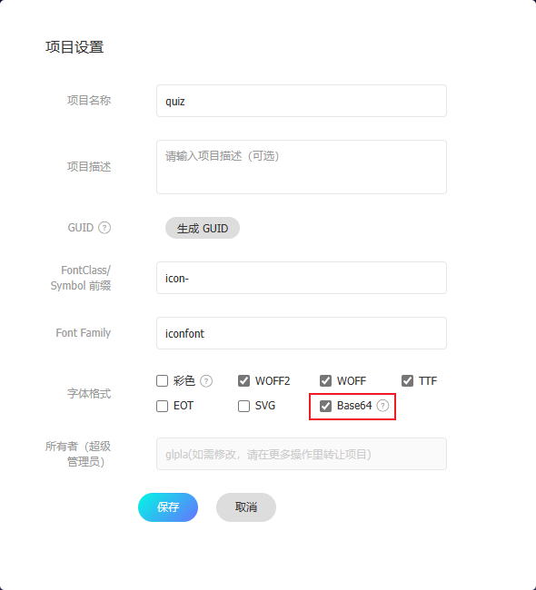
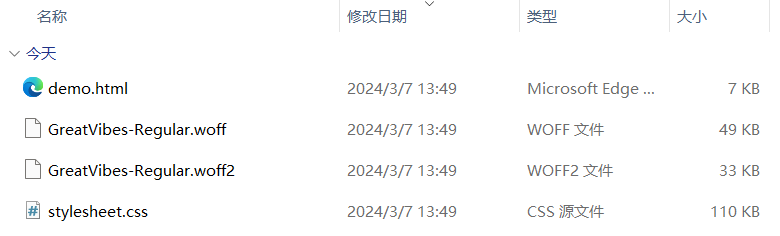

微信小程序样式文件的后缀名是 .wxss
区分全局样式和局部|页面样式
- app.wxss定义的样式是全局样式，作用于所有页面
- 每个页面的.wxss定义的样式是局部|页面样式，只作用于当前页面
微信小程序默认使用弹性盒子flex布局，也可以使用网格grid布局；更多布局请访问 Flex 、Grid
支持：
- 支持内联样式 style
- 支持外部样式导入 @import
- 支持计算函数 calc()
- 支持变量使用 var()
但是：
- 不支持全局定义 :root
- 不支持*通配符
- 组件库部分样式优先级高于类样式，需要使用内联样式
选择器
常用选择器如下表；更多选择器使用，请查看 selector
组件样式不能使用标签选择器、ID选择器和属性选择器 - Some selectors are not allowed in component wxss, including tag name selectors,
ID
selectors, and attribute selectors. WHY???
选择器
分类
说明
.
点；类选择器
#
ID选择器
element
元素|标签选择器
element, element
并列选择器
::before
伪元素选择器
::after
伪元素选择器
尽量使用常规选择器；不要炫技
全局变量在page中定义
小程序提供了很多UI的样式，背离了结构 - 样式 - 逻辑分离的原则，不建议使用，主要是巨丑。。。
内联样式
样式的属性值和数据绑定 - 想绑哪个属性就绑哪个属性
<image src="{{src}}" mode=""/>
<text style="color: {{color}};">hi,there.</text>
data: {
src:'../../imgs/qrcode.png',
color:'#f40'
}
类
动态类，使用三元表达式选择
真，使用bold样式；否则不使用或者指定其它样式
<view class="{{isActive?'bold':''}}">hi, there.</view>
基类直接叠加活动类
<view class="title {{isActive?'bold':'normal'}}">hi, there.</view>
类和样式共同使用
类box指定宽高；内联样式指定背景图片
<view class="box" style="background-image: url({{src}});"></view>
样式导入 @import
相对路径；以;结束
在app.wxss中引入初始化样式文件和阿里字体图标文件
@import './utils/css/reset.wxss';
@import './utils/css/iconfont.wxss';
导入 阿里字体图标
注册并登录
搜索字体图标 → 选择字体图标 → 添加到购物车 → 添加到项目
设置字体项目，加选 base64

字体项目设置
下载 类格式 的字体
解压 → 复制iconfont.css到小程序项目 → 改后缀名为.wxss
在页面的.wxss中导入；如果全局使用，请在app.wxss中导入
修改其样式的字体大小为rpx单位
@import '../../utils/css/iconfont.wxss';
.iconfont{
font-size: 32rpx;
}
在页面的wxml中使用
<text class="iconfont icon-home"></text>
为避免频繁使用基类，后续可封装为全局组件；详情请参考 自定义组件
定制字体
打开
谷歌字体 查找字体 Great+Vibes 或自己喜欢的字体或者使用其它平台
点击下载到本地并解压，得到字体文件GreatVibes-Regular.ttf；默认情况下，字体不支持base64，需要转码
转换完毕，单击下载downl，得到字体文件压缩包，解压后如下图；然后拷贝到小程序，将.css样式文件后缀名改为.wxss
在小程序中，查看样式文件，其它定制了字体家族为：Great Vibes

在样式中引入样式文件并使用；字体略小，可以指定为20px
@import '../../utils/transfonter.org-20240229-142749/stylesheet.wxss';
text{
font-family: 'Great Vibes';
font-size: 20px;
}
不管是使用阿里字体图标还是定制字体，本质上都是对数据base64的运用
单位
1. rpx
物理像素 - 实际的像素点
逻辑像素 - CSS的像素单位
DPR - Device Pixel Ratio, 设备像素比：设备的物理像素与逻辑像素之比
iPhone6：375*667 dpr=2；逻辑像素是375px*667px，dpr为2，所以物理像素是750px*1334px，1个逻辑像素需要2个物理像素来显示
通常采用 iPhone6（375*667 dpr=2） 作为设计稿的标准，量取尺寸，使用rpx作为单位即可
responsive px - 响应式像素；小程序 专有 单位，用来解决屏幕适配；小程序规定任何手机屏幕的宽度都是750份，即750rpx -
逻辑像素；在不同设备上运行时，小程序会自动把rpx换算成对应的物理像素，实现适配
750rpx = 375px = 750物理像素
1rpx = 0.5px = 1物理像素
2. vw vh
将屏幕宽高分为100份
3. %
百分比
颜色
使用16进制颜色，如#ff4400；支持简写，如#f40；支持透明色，如#f406；建议使用rgba()
可以通过变量定制主题色--themeColor；使用主题颜色：var(--themeColor)
page{
--themeColor:#eb4450;
font-size: 28rpx;
}
.item{
background-color: var(--themeColor);
}